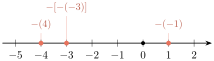
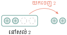

- បកស្រាយចំណោទនិងបង្ហាញសញ្ញាណចំនួនគត់រ៉ឺឡាទីប
- ធ្វើប្រមាណវិធីលើចំនួនគត់រ៉ឺឡាទីប
- ដោះស្រាយចំណោទលើចំនួនគត់រ៉ឺឡាទីប ។
1. សញ្ញាណចំនួនគត់រ៉ឺឡាទីប
តើវិធីដកអាចប្រព្រឹត្តទៅបានគ្រប់ករណីឬទេ ?
\(\displaystyle 7 - 5 = 2\)
\(\displaystyle 7 - 6 = 1\)
\(\displaystyle 7 - 7 = 0\)
\(\displaystyle 7 - 8 = ?\)
បើគេមានតែចំនួនគត់ វិធីដកមិនអាចប្រព្រឹត្តទៅបាន កាលណាតួទីមួយតូចជាងតួទីពីរ ។ ហេតុនេះ ដើម្បីឱ្យវិធីដកអាចប្រព្រឹត្តទៅបានគ្រប់ករណី គេត្រូវបង្កើតចំនួនគត់ ដែលមានសញ្ញាដកនៅពីមុខហៅថា ចំនួនគត់រ៉ឺឡាទីបអវិជ្ជមាន ។
គេបាន \(\displaystyle 7 - 8 = -1 \quad , \quad 7 - 9 = -2 \quad , \quad 7 - 10 = -3\) ។
អ្នកឧតុនិយមនៅរដ្ឋអាឡាស្កានៃសហរដ្ឋអាមេរិកបានកត់ត្រាឃើញថា សីតុណ្ហភាពដែលត្រជាក់បំផុតក្នុងសហរដ្ឋអាមេរិកកើតឡើងនៅខែ មករា ឆ្នាំ 1971 គឺមានសីតុណ្ហភាព \(\displaystyle 60^\circ C\) ក្រោមសូន្យ ។
សីតុណ្ហភាព \(\displaystyle 60^\circ C\) ក្រោមសូន្យ តាងដោយ \(\displaystyle -60^\circ C\) ។ ចំនួនអវិជ្ជមាន \(\displaystyle -60\) ជាចំនួនគត់រ៉ឺឡាទីប ។

ចំនួន \(\displaystyle \dots, -3, -2, -1, 0, 1, 2, 3, \dots\) ហៅថាចំនួនគត់រ៉ឺឡាទីប ។
គេអាចសរសេរចំនួនគត់រ៉ឺឡាទីបវិជ្ជមានដោយគ្មានសញ្ញា \(\displaystyle +\) នៅពីមុខក៏បានដែរបែបជា \(\displaystyle 1, 2, 3, \dots\) ចំណែក 0 ជាចំនួនមិនវិជ្ជមាននិងមិនអវិជ្ជមាន ។
គេមានបន្ទាត់មួយដែលមានទិសដៅ ។ នៅលើបន្ទាត់នេះគេព្រួតយកឯកតាស្មើៗគ្នាហៅថា បន្ទាត់ចំនួន ។

ក្នុងការអនុវត្ត ៖
- គេប្រើចំនួនគត់រ៉ឺឡាទីបវិជ្ជមានសម្រាប់សម្គាល់ប្រាក់ចំណេញ សីតុណ្ហភាពលើសូន្យអង្សា កាលបរិច្ឆេទខាងមុខ ឬទីតាំងនៅខាងស្តាំ \(\displaystyle \dots\) ។
- គេប្រើចំនួនគត់រ៉ឺឡាទីបអវិជ្ជមានសម្រាប់សម្គាល់ប្រាក់ខាត សីតុណ្ហភាពក្រោមសូន្យអង្សា កាលបរិច្ឆេទកន្លងទៅ ឬទីតាំងនៅខាងឆ្វេង \(\displaystyle \dots\) ។
តារាងខាងក្រោមបង្ហាញពីតុល្យភាពនៃប្រាក់ខាតនិងប្រាក់ចំណេញគិតជាម៉ឺនរៀលក្នុងហាងប្តូរប្រាក់មួយ ។
| ថ្ងៃ | ចន្ទ | អង្គារ | ពុធ | ព្រហស្បតិ៍ | សុក្រ | សៅរ៍ | អាទិត្យ |
| ប្រាក់គិតជាម៉ឺនរៀល | \(\displaystyle -4\) | \(\displaystyle +2\) | \(\displaystyle +3\) | \(\displaystyle -2\) | \(\displaystyle -3\) | \(\displaystyle +5\) | \(\displaystyle +7\) |
ពិពណ៌នាផល្លាយសម្រាប់ថ្ងៃព្រហស្បតិ៍និងថ្ងៃសៅរ៍ ។
- នៅថ្ងៃព្រហស្បតិ៍បង្ហាញថា ហាងនោះបានខាតអស់ប្រាក់ 2 ម៉ឺនរៀល ។
- នៅថ្ងៃសៅរ៍បង្ហាញថា ហាងនោះចំណេញបានប្រាក់ 5 ម៉ឺនរៀល ។
ក្នុងចំណោមចំនួន \(\displaystyle 0.4 \; , \; \frac{1}{2} \; , \; -5 \; , \; +1.2 \; , \; -9 \; , \; -1 \; , \; 0 \; , \; 3 \; , \; 5\) និង \(\displaystyle 46\) តើចំនួនណាជាចំនួនគត់រ៉ឺឡាទីបវិជ្ជមាននិងចំនួនណាជាចំនួនគត់រ៉ឺឡាទីបអវិជ្ជមាន ។
2. តម្លៃដាច់ខាតនិងលំដាប់នៃចំនួនគត់រ៉ឺឡាទីប
2.1 តម្លៃដាច់ខាតនៃចំនួនគត់រ៉ឺឡាទីប
នៅលើបន្ទាត់ចំនួន

ចម្ងាយពី 3 ទៅ 0 ស្មើនឹង 3 ឯកតា ហើយចម្ងាយពី \(\displaystyle -3\) ទៅ 0 ស្មើនឹង 3 ឯកតាដែរ ។
តម្លៃដាច់ខាតនៃមួយចំនួន គឺជាចម្ងាយពីចំនួននោះទៅដល់ 0 ។
តម្លៃដាច់ខាតនៃ \(\displaystyle a\) គេកំណត់សរសេរ \(\displaystyle |a|\) ដែល \(\displaystyle |a| = \begin{cases} a & \text{បើ } a \ge 0 \\ -a & \text{បើ } a < 0 \end{cases}\) ។
\(\displaystyle |-3| = 3 \quad , \quad |3| = 3 \quad , \quad |0| = 0\) ។
គណនាតម្លៃដាច់ខាតនៃ \(\displaystyle -25 \; , \; 13\) និង \(\displaystyle +10\) ។
តម្លៃដាច់ខាតនៃ \(\displaystyle -25\) គឺ \(\displaystyle |-25| = 25\) តម្លៃដាច់ខាតនៃ \(\displaystyle 13\) គឺ \(\displaystyle |13| = 13\) ។
តម្លៃដាច់ខាតនៃ \(\displaystyle +10\) គឺ \(\displaystyle |+10| = 10\) ។
គណនាតម្លៃដាច់ខាតនៃ \(\displaystyle |-5| \; , \; |7|\) និង \(\displaystyle |+34|\) ។
2.2 លំដាប់នៃចំនួនគត់រ៉ឺឡាទីប
នៅលើបន្ទាត់ចំនួន

គេឃើញថា \(\displaystyle 2 < 4\)
ហើយ \(\displaystyle -4 < -2\) ។
- ចំពោះចំនួនវិជ្ជមាន ចំនួនដែលមានតម្លៃដាច់ខាតធំ ជាចំនួនធំជាង ។
- ចំពោះចំនួនអវិជ្ជមាន ចំនួនដែលមានតម្លៃដាច់ខាតតូច ជាចំនួនធំជាង ។
- ចំនួនដែលស្ថិតនៅខាងស្តាំធំជាង ចំនួនដែលស្ថិតនៅខាងឆ្វេង ។
\(\displaystyle a\) និង \(\displaystyle b\) ជាពីរចំនួនគត់រ៉ឺឡាទីបអវិជ្ជមានដែល \(\displaystyle a > b\) ។ ប្រៀបធៀប \(\displaystyle |a|\) និង \(\displaystyle |b|\) ។
ឧបមាថា \(\displaystyle a = -2\) ហើយ \(\displaystyle b = -4\) ដែល \(\displaystyle a > b\)
តែ \(\displaystyle |a| = |-2| = 2 \quad , \quad |b| = |-4| = 4\) នាំឱ្យ \(\displaystyle |a| < |b|\)
ដូចនេះ បើ \(\displaystyle a\) និង \(\displaystyle b\) ជាពីរចំនួនគត់រ៉ឺឡាទីបអវិជ្ជមាន ដែល \(\displaystyle a > b\) នោះ \(\displaystyle |a| < |b|\) ។
សរសេរចំនួនគត់រ៉ឺឡាទីប \(\displaystyle -10 \; , \; -20 \; , \; 3 \; , \; 7 \; , \; -1 \; , \; -40 \; , \; 9 \; , \; 4 \; , \; 0 \; , \; 2\) ។
ក. តាមលំដាប់ឡើង ខ. តាមលំដាប់ចុះ ។
3. ចំនួនផ្ទុយនិងការដៅចំណុចលើបន្ទាត់ចំនួន
3.1 ចំនួនផ្ទុយ
សង្កេតនៅលើបន្ទាត់ចំនួន គេដាក់សញ្ញា ( \(\displaystyle -\) ) ពីមុខមួយចំនួន ដើម្បីសំគាល់ចំនួនផ្ទុយនៃចំនួននោះ ។

ចំនួនផ្ទុយនៃ 2 គឺ \(\displaystyle -2\) ចំនួនផ្ទុយនៃ \(\displaystyle -2\) គឺ 2
\(\displaystyle -(2)\) ជាចំនួនផ្ទុយនៃ 2 ដូចនេះ \(\displaystyle -(2) = -2\)
\(\displaystyle -(-2)\) ជាចំនួនផ្ទុយនៃ \(\displaystyle -2\) ដូចនេះ \(\displaystyle -(-2) = 2\) ។
\(\displaystyle -(a) = -a\) ហើយ \(\displaystyle -(-a) = a\)
ដៅចំនួន \(\displaystyle -(-1) \quad , \quad -(4)\) និង \(\displaystyle -[-(-3)]\) នៅលើបន្ទាត់ចំនួន ។
\(\displaystyle -(-1) = 1 \quad , \quad -(4) = -4 \quad , \quad -[-(-3)] = -3\) ។

ចូរបំពេញចំនួនក្នុងប្រអប់
ក. \(\displaystyle -(-15) = \square\) ខ. \(\displaystyle -[-(+8)] = \square\) ។
3.2 ការដៅចំណុចលើបន្ទាត់ចំនួន
នៅលើបន្ទាត់ចំនួន ដែលគេតាងដោយ \(\displaystyle x'x\)
\(\displaystyle A\) ជាចំណុចនៃកន្លះបន្ទាត់ \(\displaystyle Ox\) ដែល \(\displaystyle OA = 4\) ហើយ \(\displaystyle B\) ជាចំណុចនៃកន្លះបន្ទាត់ \(\displaystyle Ox'\) ដែល \(\displaystyle OB = 3\)
- ចំណុច \(\displaystyle A\) ស្ថិតនៅត្រង់ចំនួនគត់រ៉ឺឡាទីបវិជ្ជមាន 4 គេសរសេរ \(\displaystyle A(4)\) អានថាចំណុច \(\displaystyle A\) មានអាប់ស៊ីស 4
- ចំណុច \(\displaystyle B\) ស្ថិតនៅត្រង់ចំនួនគត់រ៉ឺឡាទីបអវិជ្ជមាន \(\displaystyle -3\) គេសរសេរ \(\displaystyle B(-3)\) អានថាចំណុច \(\displaystyle B\) មានអាប់ស៊ីស \(\displaystyle -3\) ។
ដៅចំណុច \(\displaystyle A(2) \; , \; B(-3)\) និង \(\displaystyle C(5)\) នៅលើបន្ទាត់ចំនួន \(\displaystyle x'x\) រួចគណនាប្រវែង \(\displaystyle AB \; , \; AC\) ។
បន្ទាត់ចំនួន
ដូចនេះ \(\displaystyle AB = 5\) ឯកតាប្រវែង
ដូចនេះ \(\displaystyle AC = 3\) ឯកតាប្រវែង ។
នៅលើបន្ទាត់ចំនួនដែលមានគល់ \(\displaystyle O\) ។
ក. ដៅចំណុច \(\displaystyle A(-3) \; , \; B(-1) \; , \; C(4)\) និង \(\displaystyle D(2)\)
ខ. គណនាប្រវែង \(\displaystyle AB\) និង \(\displaystyle BD\) ។
4. វិធីបូកនិងវិធីដកចំនួនគត់រ៉ឺឡាទីប
4.1 វិធីបូកចំនួនគត់រ៉ឺឡាទីប
មានវិធីផ្សេងៗគ្នា ដែលគេអាចបកស្រាយផលបូកនៃចំនួនគត់រ៉ឺឡាទីប ។
គណនាផលបូក \(\displaystyle 3 + 4\) ។
ដំបូងត្រូវតាងបូកកំណត់ឱ្យចំនួនវិជ្ជមាន ហើយដកកំណត់ឱ្យចំនួនអវិជ្ជមាន ។

- គេត្រូវការបូក 3 គ្រាប់និងបូក 4 គ្រាប់ទៀត (រូបខាងស្តាំ) ។
ទាំងអស់មានបូកចំនួន 7 គ្រាប់ ។
ហេតុនេះ \(\displaystyle 3 + 4 = 7\) ។
ម្យ៉ាងទៀតគេអាចបកស្រាយផលបូកដោយប្រើបន្ទាត់ចំនួន ។

ហេតុនេះ \(\displaystyle 3 + 4 = 7\) ។
គណនាផលបូក \(\displaystyle (-4) + (-1)\) ។
- គេត្រូវការដក 4 គ្រាប់និងដកមួយគ្រាប់ទៀត (រូបខាងស្តាំ) ។
ទាំងអស់មានដកចំនួន 5 គ្រាប់ ។
ហេតុនេះ \(\displaystyle (-4) + (-1) = -5\) ។
បកស្រាយផលបូកដោយប្រើបន្ទាត់ចំនួន ។

ហេតុនេះ \(\displaystyle (-4) + (-1) = -5\) ។
គណនាផលបូក \(\displaystyle 4 + (-2)\) ។
- គេត្រូវការបូក 4 គ្រាប់និងដក 2 គ្រាប់ ក្នុងករណីនេះគេសន្មតថាបូក 1 និងដក 1 ស្មើនឹងសូន្យ ។
បូក 2 ដែលនៅសល់ជាចម្លើយ (រូបខាងស្តាំ) ។
ហេតុនេះ \(\displaystyle 4 + (-2) = 2\) ។
- ផលបូកពីរចំនួនគត់រ៉ឺឡាទីបវិជ្ជមាន ជាចំនួនវិជ្ជមាន ហើយផលបូកស្មើនឹងផលបូកតម្លៃដាច់ខាតនៃចំនួនទាំងពីរ ។
- ផលបូកពីរចំនួនគត់រ៉ឺឡាទីបអវិជ្ជមាន ជាចំនួនអវិជ្ជមានដែលផលបូកតម្លៃដាច់ខាតនៃចំនួនទាំងពីរ ។
- ផលបូកនៃពីរចំនួនគត់រ៉ឺឡាទីបមានសញ្ញាផ្ទុយគ្នា មានសញ្ញាដូចតួដែលមានតម្លៃដាច់ខាតធំជាងគេ ហើយផលបូកស្មើនឹងផលដកតម្លៃដាច់ខាតនៃចំនួនទាំងពីរ ។
គណនាផលបូកនៃចំនួន \(\displaystyle (-7) + 4 \quad , \quad (-2) + (-9)\) និង \(\displaystyle 15 + (-10)\) ។
- \(\displaystyle (-7) + 4 = -3\) ប្រើវិធានទី 3
- \(\displaystyle (-2) + (-9) = -11\) ប្រើវិធានទី 2
- \(\displaystyle 15 + (-10) = 5\) ប្រើវិធានទី 3 ។
កាលពីថ្ងៃមុន សំភារខ្ចីលុយបងស្រីរបស់គាត់ 5000 រៀល ថ្ងៃនេះសំភារសងបងស្រីគាត់វិញ 3000 រៀល ។ តើសំភារនៅជំពាក់លុយបងស្រីគាត់ប៉ុន្មានរៀលទៀត ?
សំភារខ្ចីប្រាក់ 5000 រៀល តាងដោយ \(\displaystyle -5000\) ហើយគាត់សងវិញ 3000 រៀល តាងដោយ \(\displaystyle +3000\) ។
គេបាន \(\displaystyle -5000 + 3000 = -2000\)
ដូចនេះ សំភារនៅជំពាក់លុយបងស្រីគាត់ចំនួន 2000 រៀលទៀត ។
បំពេញចន្លោះខាងក្រោម
ក. \(\displaystyle -10 + (\dots) = -14\) ខ. \(\displaystyle (\dots) + (-3) = 4\) គ. \(\displaystyle 8 + (\dots) = 5\) ។
4.2 វិធីដកចំនួនគត់រ៉ឺឡាទីប
គណនាផលដក \(\displaystyle 4 - 2\) ។

- យើងមានបូក 4 គ្រាប់ ដែលតំណាងឱ្យចំនួន 4 ។
យកបូក 2 គ្រាប់ចេញជាលទ្ធផលនៅសល់បូក 2 ជាចម្លើយ ។
ដូចនេះ \(\displaystyle 4 - 2 = 2\) ។
- ផលបូកពីរចំនួនគត់រ៉ឺឡាទីបវិជ្ជមាន ជាចំនួនវិជ្ជមាន ហើយផលបូកស្មើនឹងផលបូកតម្លៃដាច់ខាតនៃចំនួនទាំងពីរ ។
- ផលបូកពីរចំនួនគត់រ៉ឺឡាទីបអវិជ្ជមាន ជាចំនួនអវិជ្ជមានដែលផលបូកតម្លៃដាច់ខាតនៃចំនួនទាំងពីរ ។
- ផលបូកនៃពីរចំនួនគត់រ៉ឺឡាទីបមានសញ្ញាផ្ទុយគ្នា មានសញ្ញាដូចតួដែលមានតម្លៃដាច់ខាតធំជាងគេ ហើយផលបូកស្មើនឹងផលដកតម្លៃដាច់ខាតនៃចំនួនទាំងពីរ ។
គណនាផលបូកនៃចំនួន \(\displaystyle (-7) + 4 \quad , \quad (-2) + (-9)\) និង \(\displaystyle 15 + (-10)\) ។
- \(\displaystyle (-7) + 4 = -3\) ប្រើវិធានទី 3
- \(\displaystyle (-2) + (-9) = -11\) ប្រើវិធានទី 2
- \(\displaystyle 15 + (-10) = 5\) ប្រើវិធានទី 3 ។
កាលពីថ្ងៃមុន សំភារខ្ចីលុយបងស្រីរបស់គាត់ 5000 រៀល ថ្ងៃនេះសំភារសងបងស្រីគាត់វិញ 3000 រៀល ។ តើសំភារនៅជំពាក់លុយបងស្រីគាត់ប៉ុន្មានរៀលទៀត ?
សំភារខ្ចីប្រាក់ 5000 រៀល តាងដោយ \(\displaystyle -5000\) ហើយគាត់សងវិញ 3000 រៀល តាងដោយ \(\displaystyle +3000\) ។
គេបាន \(\displaystyle -5000 + 3000 = -2000\)
ដូចនេះ សំភារនៅជំពាក់លុយបងស្រីគាត់ចំនួន 2000 រៀលទៀត ។
បំពេញចន្លោះខាងក្រោម
ក. \(\displaystyle -10 + (\dots) = -14\) ខ. \(\displaystyle (\dots) + (-3) = 4\) គ. \(\displaystyle 8 + (\dots) = 5\) ។
4.2 វិធីដកចំនួនគត់រ៉ឺឡាទីប
គណនាផលដក \(\displaystyle 4 - 2\) ។
- យើងមានបូក 4 គ្រាប់ ដែលតំណាងឱ្យចំនួន 4 ។
យកបូក 2 គ្រាប់ចេញជាលទ្ធផលនៅសល់បូក 2 ជាចម្លើយ ។
ដូចនេះ \(\displaystyle 4 - 2 = 2\) ។
ឥឡូវនេះគេសិក្សាផលគុណដែលមានកត្តាទាំងពីរជាចំនួនអវិជ្ជមាន ។ ដើម្បីគណនា \(\displaystyle (-4) \times (-3)\) គេត្រូវគណនា \(\displaystyle 4 \times (-3)\) ជាមុនសិន រួចគ្រាន់តែប្តូរសញ្ញាលទ្ធផលរបស់វា ។
\(\displaystyle 4 \times (-3) = -12\) ដូចនេះ \(\displaystyle (-4) \times (-3) = 12\) ។
គេសង្កេតឃើញថា
- ផលគុណជាចំនួនវិជ្ជមាន កាលណាកត្តាទាំងពីរជាចំនួនអវិជ្ជមាន ។
វិធាននៃវិធីគុណ
\(\displaystyle (+) \times (+) \rightarrow (+)\) \(\displaystyle (-) \times (+) \rightarrow (-)\) \(\displaystyle (+) \times (-) \rightarrow (-)\) \(\displaystyle (-) \times (-) \rightarrow (+)\)
- ជួនកាលគេសរសេរ \(\displaystyle (4)(3)\) មានន័យថា \(\displaystyle 4 \times 3\) ។
- មួយចំនួនគុណនឹងសូន្យ ស្មើនឹងសូន្យ ។ ឧទាហរណ៍ ៖ \(\displaystyle (-3) \times 0 = 0\) ។
ក. គណនាផលគុណ \(\displaystyle A = (-2)(-5)(-4)\) និង \(\displaystyle B = 5(-2)(-8)\)
ខ. បំពេញចន្លោះ \(\displaystyle (\dots)(-9) = -72\) និង \(\displaystyle (-4)(\dots) = 20\) ។
ក. \(\displaystyle A = (-2)(-5)(-4)\) \(\displaystyle B = 5(-2)(-8)\)
\(\displaystyle = \underbrace{(-2)(-5)}(-4)\) \(\displaystyle = \underbrace{5(-2)}(-8)\)
\(\displaystyle = 10(-4)\) \(\displaystyle = (-10)(-8)\)
\(\displaystyle = -40\) \(\displaystyle = 80\)
ដូចនេះ \(\displaystyle A = -40\) ។ ដូចនេះ \(\displaystyle B = 80\) ។
ខ. \(\displaystyle (8)(-9) = -72\) និង \(\displaystyle (-4)(-5) = 20\) ។
គណនាផលគុណនៃចំនួនខាងក្រោម ៖
ក. \(\displaystyle (-20)(3)\) ខ. \(\displaystyle (-6)(-6)\) គ. \(\displaystyle (-5) \times 0\) ឃ. \(\displaystyle (-6)(3)(-4)(2)\) ។
5.2 វិធីចែកចំនួនគត់រ៉ឺឡាទីប
ដើម្បីធ្វើវិធីចែកចំនួនគត់រ៉ឺឡាទីប គេត្រូវផ្អែកលើវិធីគុណចំនួនគត់រ៉ឺឡាទីប ។
\(\displaystyle 6 \div 3\) គេអាចសរសេរ \(\displaystyle \frac{6}{3}\)
\(\displaystyle \frac{6}{3} = (\quad)\) មានន័យថា \(\displaystyle (\quad) \times 3 = 6\) គេដឹងថា \(\displaystyle (2) \times 3 = 6\) ហេតុនេះ \(\displaystyle \frac{6}{3} = 2\) ។
\(\displaystyle \frac{6}{-3} = (\quad)\) មានន័យថា \(\displaystyle (\quad) \times (-3) = 6\) គេដឹងថា \(\displaystyle (-2)(-3) = 6\) ហេតុនេះ \(\displaystyle \frac{6}{-3} = -2\) ។
\(\displaystyle \frac{-6}{3} = (\quad)\) មានន័យថា \(\displaystyle (\quad) \times (3) = -6\) គេដឹងថា \(\displaystyle (-2)(3) = -6\) ហេតុនេះ \(\displaystyle \frac{-6}{3} = -2\) ។
\(\displaystyle \frac{-6}{-3} = (\quad)\) មានន័យថា \(\displaystyle (\quad) \times (-3) = -6\) គេដឹងថា \(\displaystyle (2)(-3) = -6\) ហេតុនេះ \(\displaystyle \frac{-6}{-3} = 2\) ។
ដូចវិធីគុណដែរ
- តម្លៃលដផលចែកផលចែកនៃតម្លៃដាច់ខាត
- ផលចែកជាចំនួនវិជ្ជមាន កាលណាទាំងពីរមានសញ្ញាដូចគ្នា
- ផលចែកជាចំនួនអវិជ្ជមាន កាលណាទាំងពីរមានសញ្ញាផ្ទុយគ្នា ។
វិធាននៃវិធីចែក
\(\displaystyle \frac{(+)}{(+)} \rightarrow (+)\) , \(\displaystyle \frac{(-)}{(-)} \rightarrow (+)\) \(\displaystyle \frac{(+)}{(-)} \rightarrow (-)\) , \(\displaystyle \frac{(-)}{(+)} \rightarrow (-)\)
- សូន្យចែកនឹងមួយចំនួនមិនសូន្យ បានផលចែកសូន្យ ។
- គេមិនអាចយកមួយចំនួនចែកនឹងសូន្យបានទេ ។
គណនាផលចែក ៖
ក. \(\displaystyle \frac{-20 + 4}{2}\) ខ. \(\displaystyle \frac{-10}{3 - 5}\) គ. \(\displaystyle \frac{[4 - (-10)]}{-7}\) ។
ក. \(\displaystyle \frac{-20 + 4}{2} = \frac{-16}{2}\) ខ. \(\displaystyle \frac{-10}{3 - 5} = \frac{-10}{-2}\) គ. \(\displaystyle \frac{[4 - (-10)]}{-7} = \frac{4 + 10}{-7} = \frac{14}{-7}\)
\(\displaystyle = -8\) \(\displaystyle = 5\) \(\displaystyle = -2\) ។
ក. គណនាផលចែក \(\displaystyle \frac{-40416}{-165 - 256}\) និង \(\displaystyle \frac{-2729 + 583}{-29}\) ។
ខ. ចូរបំពេញចន្លោះ \(\displaystyle \frac{-40}{(\dots)} = -4\) និង \(\displaystyle \frac{(\dots)}{-6} = 7\) ។
6. លំដាប់នៃប្រមាណវិធី
6.1 ប្រមាណវិធីដែលមានបូកនិងដក
គណនាកន្សោមលេខ \(\displaystyle 30 + 17 - 20 \quad , \quad 21 - 7 + 3\) និង \(\displaystyle 8 - 14 + (-5) - (-2)\) ។
\(\displaystyle 30 + 17 - 20 = \underbrace{30 + 17} - 20 = 47 - 20 = 27\)
\(\displaystyle 21 - 7 + 3 = \underbrace{21 - 7} + 3 = 14 + 3 = 17\)
\(\displaystyle 8 - 14 + (-5) - (-2) = \underbrace{8 - 14} + (-5) - (-2) = -6 + (-5) - (-2) = -11 + 2 = -9\)
គណនាកន្សោមលេខ \(\displaystyle 32 - (10 + 5)\) និង \(\displaystyle -18 + [15 - (-4)]\) ។
\(\displaystyle 32 - (10 + 5) = 32 - (\underbrace{10 + 5}) = 32 - 15 = 17\)
\(\displaystyle -18 + [15 - (-4)] = -18 + [\underbrace{15 - (-4)}] = -18 + (15 + 4) = -18 + 19 = 1\) ។
បើកន្សោមលេខមានតែវិធីបូកនិងដក (គ្មានរង្វង់ក្រចក) នោះប្រមាណវិធីត្រូវធ្វើពីឆ្វេងទៅស្តាំ តែបើមានរង្វង់ក្រចកត្រូវធ្វើប្រមាណវិធីក្នុងរង្វង់ក្រចកមុន ។
គណនាកន្សោមលេខ
ក. \(\displaystyle 6 - 5 + 4 - 3\) ខ. \(\displaystyle 6 - (5 + 4 - 3)\) គ. \(\displaystyle 6 - (5 + 4) - 3\) ។
ក. \(\displaystyle 6 - 5 + 4 - 3 = \underbrace{6 - 5} + 4 - 3 = 1 + 4 - 3 = 5 - 3 = 2\)
ខ. \(\displaystyle 6 - (5 + 4 - 3) = 6 - (9 - 3) = 6 - 6 = 0\)
គ. \(\displaystyle 6 - (5 + 4) - 3 = 6 - 9 - 3 = -3 - 3 = -6\) ។
ឆ្នាំ 1998 ជាឆ្នាំដែលក្រុមហ៊ុនលក់ភេសជ្ជៈទើបដំណើរការដំបូង គេដឹងថានៅត្រីមាសទី 1 ក្រុមហ៊ុនខាតអស់ប្រាក់ 50 000 ម៉ឺនរៀល ត្រីមាសទី 2 ក្រុមហ៊ុនខាតអស់ប្រាក់ 20 000 ម៉ឺនរៀល ត្រីមាសទី 3 ក្រុមហ៊ុនចំណេញប្រាក់ 30 000 ម៉ឺនរៀល ហើយត្រីមាសទី 4 ក្រុមហ៊ុនបានចំណេញប្រាក់ 65 000 ម៉ឺនរៀល ។
ក. តើក្រុមហ៊ុនខាត ឬចំណេញនៅដំណាច់ឆ្នាំ 1998 ?
ខ. បើខាត តើខាតប៉ុន្មានរៀល ? ហើយបើចំណេញ តើចំណេញប៉ុន្មានរៀល ?
ក. ខាតតាងដោយសញ្ញាអវិជ្ជមាន ហើយចំណេញតាងដោយវិជ្ជមាន
គេបាន \(\displaystyle -50\ 000 - 20\ 000 + 30\ 000 + 65\ 000 = 25\ 000\) ម៉ឺនរៀល
ខ. ដោយលទ្ធផលជាចំនួនវិជ្ជមាន ដូចនេះក្រុមហ៊ុនចំណេញប្រាក់ 25000 ម៉ឺនរៀលនៅដំណាច់ឆ្នាំ 1998 ។
គណនាកន្សោមលេខខាងក្រោម ៖
ក. \(\displaystyle 13 - 4 + 7\) ខ. \(\displaystyle 13 - (4 + 7)\) គ. \(\displaystyle (12 + 5) + 8\) ឃ. \(\displaystyle 12 + (5 + 8)\) ។
6.2 ប្រមាណវិធីដែលមានតែគុណនិងចែក
គណនាកន្សោមលេខ \(\displaystyle 5 \times (-3) \times 2 \quad , \quad 30 \div 5 \times 2 \quad , \quad 800 \div 100 \div (-4)\)
និង \(\displaystyle 10 \times 14 \div 7\) ។
\(\displaystyle 5 \times (-3) \times 2 = (-15) \times 2 = -30 \quad , \quad 30 \div 5 \times 2 = 6 \times 2 = 12\)
\(\displaystyle 800 \div 100 \div (-4) = 8 \div (-4) = -2 \quad , \quad 10 \times 14 \div 7 = 140 \div 7 = 20\) ។
គណនាកន្សោម \(\displaystyle 5 \times [(-3) \times 2]\) និង \(\displaystyle 800 \div [100 \div (-4)]\) ។
\(\displaystyle 5 \times [(-3) \times 2] = 5 \times (-6) = -30 \quad \quad \quad 800 \div [100 \div (-4)] = 800 \div (-25) = -32\) ។
បើកន្សោមលេខមានតែវិធីគុណនិងចែក (គ្មានរង្វង់ក្រចក) នោះប្រមាណវិធីត្រូវធ្វើពីឆ្វេងទៅស្តាំ តែបើមានរង្វង់ក្រចកត្រូវធ្វើប្រមាណវិធីក្នុងរង្វង់ក្រចកមុន ។
គណនាកន្សោមលេខ \(\displaystyle 8 \times 10 \div 5 \quad , \quad 12 \times 6 \div 4 \times 2\) និង \(\displaystyle 12 \times 6 \div (4 \times 2)\) ។
\(\displaystyle 8 \times 10 \div 5 = 80 \div 5 = 16 \quad , \quad 12 \times 6 \div 4 \times 2 = 72 \div 4 \times 2 = 18 \times 2 = 36 \quad ,\)
\(\displaystyle 12 \times 6 \div (4 \times 2) = 72 \div (8) = 9\) ។
គណនាកន្សោមលេខខាងក្រោម ៖
ក. \(\displaystyle [5 \times (-3)] \times 2\) ខ. \(\displaystyle [5 \times (-3) \times 2]\) គ. \(\displaystyle 1000 \div 100 \div 10\) ឃ. \(\displaystyle 40 \div (40 \div 10)\) ។
6.3 ប្រមាណវិធីចម្រុះ
គណនាកន្សោមលេខ \(\displaystyle 6 + 5 \times 7 \quad , \quad 25 - 5 \times 5 \quad , \quad 18 - 10 \div 2\) និង \(\displaystyle 20 \div 4 + 6\) ។
\(\displaystyle 6 + 5 \times 7 = 6 + 35 = 41 \quad , \quad 25 - 5 \times 5 = 25 - 25 = 0\)
\(\displaystyle 18 - 10 \div 2 = 18 - 5 = 13 \quad , \quad 20 \div 4 + 6 = 5 + 6 = 11\) ។
បើកន្សោមលេខមានប្រមាណវិធីចម្រុះ (គ្មានរង្វង់ក្រចក) នោះគេត្រូវធ្វើប្រមាណវិធីគុណ ឬចែកមុន ។
គណនាកន្សោមលេខ
\(\displaystyle [16 \div (3 + 5)] - (2 + 2 + 3)\) និង \(\displaystyle \{[1 + (2 - 3) \times 4] \times 5\} \times (6 - 7)\) ។
\(\displaystyle [16 \div (3 + 5)] - (2 + 2 + 3) = (16 \div 8) - (1 + 3) = 2 - 4 = -2\) ។
\(\displaystyle \{[1 + (2 - 3) \times 4] \times 5\} \times (6 - 7) = \{[1 + (-1) \times 4] \times 5\} \times (-1) = [(1 - 4) \times 5] \times (-1)\)
\(\displaystyle = [(-3) \times 5] \times (-1) = (-15) \times (-1) = 15\) ។
គណនាកន្សោមលេខខាងក្រោម ៖
ក. \(\displaystyle [2 - 3(5 + 4)] - (6 + 5 \times 2)\) ខ. \(\displaystyle [4 + (4 \div 4)](4)\) គ. \(\displaystyle [(35 - 7)(4 + 6)] \div 2\) ។
លំហាត់
សរសេរចំនួនគត់រ៉ឺឡាទីប \(\displaystyle -7 \; , \; 5 \; , \; -10 \; , \; 0 \; , \; -22 \; , \; 3 \; , \; 8 \; , \; -2 \; , \; 9 \; , \; 1 \; , \; 23 \; ,\)
\(\displaystyle 34 \; , \; -13\) ។
ក. តាមលំដាប់ឡើង ខ. តាមលំដាប់ចុះ ។
- ដៅចំណុច \(\displaystyle A(-4) \; , \; B(-6) \; , \; C(3)\) និង \(\displaystyle D(5)\) លើបន្ទាត់ចំនួន រួចគណនាប្រវែង \(\displaystyle AB \; , \; AC\) និង \(\displaystyle BC\) ។
បំពេញសមភាពខាងក្រោម ៖
ក. \(\displaystyle |-4| = \dots\) ខ. \(\displaystyle |+2| = \dots\)
គ. \(\displaystyle a = -7\) និង \(\displaystyle b\) ជាចំនួនផ្ទុយនៃ \(\displaystyle a\) នោះ \(\displaystyle |b| = \dots\)
គណនាផលបូកខាងក្រោម ដោយប្រើបន្ទាត់ចំនួន
ក. \(\displaystyle 4 + 6\) ខ. \(\displaystyle -5 + (-2)\) គ. \(\displaystyle +7 + (-3)\) ឃ. \(\displaystyle 0 + 5\) ង. \(\displaystyle (-4) + 3\) ។
បំពេញចន្លោះក្នុងសមភាពខាងក្រោម ៖
ក. \(\displaystyle 9 + \dots = 0\) ខ. \(\displaystyle 5 + \dots = 2\) គ. \(\displaystyle -8 + \dots = -12\)
ឃ. \(\displaystyle 15 + \dots = -18\) ង. \(\displaystyle -6 + 5 + \dots = -3\) ច. \(\displaystyle -7 + (-3) + \dots = -12\) ។
គណនាផលដក
ណែនាំ ៖ \(\displaystyle 10 - 6 = 10 + (-6)\) ឬ \(\displaystyle 15 - (-9) = 15 + (9)\)
ក. \(\displaystyle 7 - 4\) ខ. \(\displaystyle 17 - 22\) គ. \(\displaystyle -10 - 3\) ឃ. \(\displaystyle 20 - (-5)\)
ង. \(\displaystyle -12 - (-10)\) ច. \(\displaystyle -13 - 5\) ឆ. \(\displaystyle 23 - (-3)\) ។
គណនាកន្សោមលេខខាងក្រោម ៖
ក. \(\displaystyle 22 + 10 - (-7)\) ខ. \(\displaystyle 4 - 12 + (-6)\) គ. \(\displaystyle 7 - (-6) + 4\)
ឃ. \(\displaystyle -8 - (-2) + 1\) ង. \(\displaystyle -4 - 6 + (-5)\) ច. \(\displaystyle 5 - 11 - (-8)\) ។
គណនា រួចប្រៀបធៀប ៖
ក. \(\displaystyle 10 - 3\) និង \(\displaystyle 3 - 10\) ខ. \(\displaystyle (-9) - (-5)\) និង \(\displaystyle (-5) - (-9)\)
តើវិធីដកមានលក្ខណៈត្រឡប់ឬទេ ?
គ. \(\displaystyle [4 - (-7)] - 2\) និង \(\displaystyle 4 - [(-7) - 2]\) ឃ. \(\displaystyle (12 - 7) - 3\) និង \(\displaystyle 12 - (7 - 3)\) ។
តើវិធីដកមានលក្ខណៈផ្តុំឬទេ ?
គណនាផលគុណខាងក្រោម ៖
ក. \(\displaystyle (-6)(-4)\) ខ. \(\displaystyle (-12)(-3)\) គ. \(\displaystyle (-9)(7)\) ឃ. \(\displaystyle (10)(-9)\)
ង. \(\displaystyle (-500)(-230)\) ច. \(\displaystyle (-15)(400)\) ឆ. \(\displaystyle -31 \times (59)\) ។
បំពេញចន្លោះក្នុងសមភាពខាងក្រោម ៖
ក. \(\displaystyle -5 = (-1)(\dots)\) ខ. \(\displaystyle (-1)(\dots) = -2\) គ. \(\displaystyle -24 = (-1)(\dots)\)
ឃ. \(\displaystyle (1)(\dots) = -4\) ង. \(\displaystyle (\dots)(13) = -78\) ច. \(\displaystyle (-3)(\dots) = -12\)
ឆ. \(\displaystyle (-7)(\dots) = 0\) ជ. \(\displaystyle (\dots)(-5) = 30\) ។
គណនាផលចែកខាងក្រោម ៖
ក. \(\displaystyle (-36) \div 9\) ខ. \(\displaystyle 50 \div (-5)\) គ. \(\displaystyle (-45) \div 9\) ឃ. \(\displaystyle \frac{-40}{-5}\)
ង. \(\displaystyle \frac{-44}{11}\) ច. \(\displaystyle \frac{[-1 + (-8)]}{3}\) ឆ. \(\displaystyle \frac{(-7 - 20)}{9}\) ជ. \(\displaystyle \frac{[-5 + (-5)]}{-10}\) ។
គណនាកន្សោមលេខខាងក្រោម ៖
ក. \(\displaystyle 6 + 9 + (-2)\) ខ. \(\displaystyle 20 - 12 + 8\) គ. \(\displaystyle 16 - 9 - 5\)
ឃ. \(\displaystyle 3 \times 12 \times 4\) ង. \(\displaystyle 7 \times (-5) \times 2\) ច. \(\displaystyle 18 \div 3 \times 2\)
ឆ. \(\displaystyle 11 \times [5 \times (-2)]\) ជ. \(\displaystyle 50 \div [5 \times (-2)]\) ឈ. \(\displaystyle 280 \div 20 \div 7\) ។
គណនាកន្សោមលេខខាងក្រោម ៖
ក. \(\displaystyle 28 + [7 \times (-3 + 5)]\) ខ. \(\displaystyle [40 + 3(1 - 2)] \times 6\) គ. \(\displaystyle [(21 + 25) \div 7] \times (21 + 28 \div 7)\)
ឃ. \(\displaystyle [5700 - 43(88 + 12)] \div 2 \div (8 - 2)\) ង. \(\displaystyle 300 \div \{[150 + (40 \div 8)] \times [-7 - (9)]\}\) ។
- បូណាមានគ្រាប់ឃ្លី 5 គ្រាប់ បងគាត់បានឱ្យឃ្លីថែម 3 គ្រាប់ទៀត ។ បូណាបានលេងឃ្លីចាញ់អស់ចាញ់អស់ឃ្លី 10 គ្រាប់ ។ តើបូណាត្រូវជំពាក់ឃ្លីចំនួនប៉ុន្មានគ្រាប់ ?
- ទីក្រុងមួយនៃប្រទេសរុស្ស៊ីមានសីតុណ្ហភាព \(\displaystyle -15^\circ C\) នៅពេលព្រឹក ។ នៅអធ្រាត្រពេលយប់សីតុណ្ហភាពឡើងបាន \(\displaystyle 24^\circ C\) ។ តើសីតុណ្ហភាពពេលយប់មានប៉ុន្មានអង្សា ?
ប្រវត្តិវិទូនៃប្រទេសក្រិច ប្លាតុង កើត 59 ឆ្នាំមុន គ.ស ។ គាត់ស្លាប់នៅអាយុ 78 ឆ្នាំ ។
ក. តើឆ្នាំដែលគាត់កើត ដោយចំនួនគត់រ៉ឺឡាទីបធៀបនឹង គ.ស ។
ខ. តើគាត់ស្លាប់នៅឆ្នាំណា ?
ព្រះពុទ្ធកើតមុន គ.ស 80 ឆ្នាំ ។ គ.ស កើតមុន គ.ស 544 ឆ្នាំ ។
ក. សរសេរឆ្នាំកំណើតព្រះពុទ្ធជាចំនួនគត់រ៉ឺឡាទីបធៀបនឹង គ.ស ។
ខ. សរសេរឆ្នាំកំណើតព្រះពុទ្ធជាចំនួនគត់រ៉ឺឡាទីបធៀបនឹង គ.ស ។
គ. តើព្រះពុទ្ធកើតមុន គ.ស ប៉ុន្មានឆ្នាំ ?
ខ្លឹមសារ៖ សៀវភៅពុម្ពគណិតវិទ្យាថ្នាក់ទី៧ របស់ក្រសួងអប់រំ យុវជន និងកីឡា · វាយអត្ថបទ គូររូបភាពឡើងវិញ និងរៀបចំលើអនឡាញដោយលោកគ្រូ សាន សុខលី សម្រាប់ការសិក្សាដោយឥតគិតថ្លៃ និងមិនរកប្រាក់ចំណេញ។ មិនមែនជាការបោះពុម្ពផ្លូវការរបស់ក្រសួងទេ។